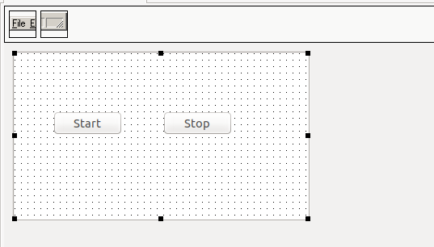
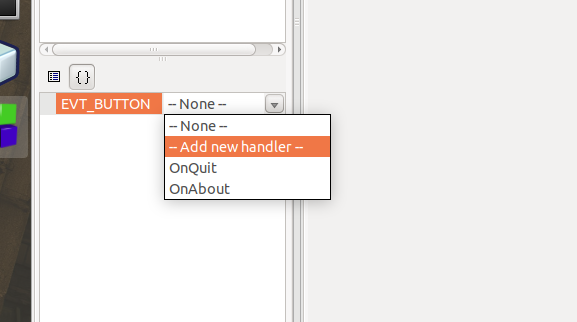

Pre-requisites
Create a C++ application with a preferred IDE. In this example, IDE ‘CodeBlocks’ has been used.
-
Create a sample GUI.
For this sample application, a simple UI is created with only 2 buttons.
Start – Registers app with monochrome library. Requests to send events when available.
Stop – Requests to stop sending events.Figure 1 Creating a New Project -
Add Monochrome library to the application. For the purpose of documentation,
- Create a directory named ‘lib’ and place the ‘libmonochrome-sdk.so’ shared object files (This can be found inside /usr/lib/zebra-camera) in the ‘lib’ directory.
- Create a directory named ‘include_tp_header’ and place the header files of the monochrome library in that directory.(headers can be found inside /usr/include/zebra-camera/monochrome_sdk directory.)
-
Create ‘button-click’ events for the application.
Figure 2 Create Events -
Create a class to register to events by implementing a pure abstract class “ImageEventSubscriber”. In this example, a class called ‘ImageEventSubscriberSample’ is created.
-
The header file is given below.
#ifndef IMAGE_EVENT_SUBSCRIPTION_IMPL_H #define IMAGE_EVENT_SUBSCRIPTION_IMPL_H #include "image_event.h" #include "image_event_subscriber.h" /** * Sample implementation of the ImageEventSubscriber class. * ImageEventSubscriber is a pure abstract class. User can implement(inherit) * the class to own class and override the RecieveImageEvents method to get the image events. */ class ImageEventSubscriberSample : public ImageEventSubscriber { public: /** * Sample implementation of the pure virtual method RecieveImageEvents * given in the ImageEventSubscriber class. * @param image_creation_event ImageCreationEvent object contains the tower platter image data. */ void RecieveImageEvents(ImageCreationEvent *image_creation_event); }; #endif /* IMAGE_EVENT_SUBSCRIPTION_IMPL_H */ -
Source (cpp) file is provided below.
Note: As the document is a guide on implementing the monochrome library, the example here only shows, how to retrieve image data. User can use preferred method to show the data in GUI or save images as files. The tower platter image data is contained inside ‘ImageCreationEvent’ class. Data can be retrieved using GetTowerImage() api and GetPlatterImage() APIs. The pure virtual method ‘void RecieveImageEvents (ImageCreationEvent *image_creation_event)’ has to be overridden to receive events.
#include <iostream> #include <string> #include "image_event_subscriber.h" #include "image_event.h" #include "image_event_subscription_impl.h" void ImageEventSubscriberSample::RecieveImageEvents(ImageCreationEvent *image_creation_event) { uint8_t *tower_image_ptr = image_creation_event_.GetTowerImage(); uint8_t *platter_image_ptr = image_creation_event_.GetPlatterImage(); }
-
-
In the main program header, two member variables are created to hold the instance of two classes. Namely, ‘ImageEventSubscriberSample’ class that was created earlier and the pure virtual ‘DirectoryObserver’ class. ‘DirectoryObserver’ can be initialized with the implementation of ‘ImageCreationObserver’ object.
Note: The auto generated code snippets of the CodeBlocks IDE haven been left out of this Guide for better understanding and only applicable sections of the ‘header’ file have been included.
#include "image_event_subscription_impl.h" #include "directory_observer.h" #include "image_event.h" class Tower_Platter_SampleFrame: public wxFrame { public: Tower_Platter_SampleFrame(wxWindow* parent,wxWindowID id = -1); virtual ~Tower_Platter_SampleFrame(); private: // ... some more auto generated codes //(*Declarations(Tower_Platter_SampleFrame) wxStatusBar* StatusBar1; wxButton* btn_stop_; wxButton* btn_start_; //*) ImageEventSubscriber* subscriber_; DirectoryObserver *dir_observer_; DECLARE_EVENT_TABLE() }; -
Implementation of the ‘onclick’ event of the ‘start’ button takes place in the source of the main program
void Tower_Platter_SampleFrame::Onbtn_start_Click(wxCommandEvent& event) { try { subscriber_ = new ImageEventSubscriberSample(); // creates DirectoryObserver object and registers the above // created ImageEventSubscriber object. dir_observer_ = new ImageCreationObserver(); dir_observer_->StartObserving(subscriber_); } catch (std::exception& exception) { std::cout << "Exception : " << exception.what() << std::endl; } } -
OnClick’ event of the ‘Stop button’
void Tower_Platter_SampleFrame::Onbtn_stop_Click(wxCommandEvent& event) { try { // stops scanning for new tower platter images dir_observer_->StopObserving(); } catch (std::exception& exception) { std::cout << "Exception : " << exception.what() << std::endl; } } -
In order to receive image events, TriggerTowerPlatterImageEvent() API should be called, once the DecodeImageEvent is received from the camera SDK.
class DecodeImageEventObserver: public DecodeImageEventListener { public: void ImageReceived(ImageEventData ev, ImageEventMetaData md) { dir_observer_->TriggerTowerPlatterImageEvent(); } };Notifies the trigger Tower/Platter Image Events.
TriggerTowerPlatterImageEvent();Every time a Decode Image event is triggered, the two corresponding Tower/Platter images will be saved in the Mass Storage by the MP7. When a call is made to ‘TriggerTowerPlatterImageEvent()’, those two images can be retrieved from the Mass Storage through ‘ReceiveImageEvents()’.
-
'CMakeList’ file creation.
Monochrome library can be linked to the project using ‘cmake’. If the user wishes, the same can be achieved with terminal commands as well.
cmake_minimum_required (VERSION 3.8) project (gui_sample) find_package(wxWidgets COMPONENTS core base REQUIRED) # wxWidgets include include( "${wxWidgets_USE_FILE}" ) set(CMAKE_CXX_STANDARD 11) set(CMAKE_CXX_STANDARD_REQUIRED on) #include library headers include_directories(${CMAKE_CURRENT_SOURCE_DIR}/include_tp_header) include_directories(${CMAKE_CURRENT_SOURCE_DIR}/include) # Link with the shared library: link_directories(${CMAKE_CURRENT_SOURCE_DIR}/lib/) set ( PROJECT_LINK_LIBS libmonochrome-sdk.so ) # Create an executable file(GLOB SOURCE "*.cpp") add_executable(gui_sample ${SOURCE}) # Set output target to build directory set_target_properties(gui_sample PROPERTIES RUNTIME_OUTPUT_DIRECTORY ${CMAKE_CURRENT_SOURCE_DIR}/build) target_link_libraries(gui_sample ${PROJECT_LINK_LIBS} ) target_link_libraries(gui_sample ${wxWidgets_LIBRARIES}) -
Build and Run.
A terminal should be opened in the same folder that contains the CMakeList.txt. Then the following commands should be executed as shown in the code snippets below.
cmake . makeThe ‘build’ directory should be opened, and the following code line should be used for execution of the program.
run “./gui_sample” -
Configuration settings of tower/platter imaging library.
Tower/platter imaging library configuration file is available at: "/usr/share/zebra-camera/configs/zebra-camera-sdk/camera-sdk-conf.xml"
- mp_mass_storage_path – Partition path of the SD card that MP7 writes tower/platter images (without trailing “/”). e.g.<mp_mass_storage_path>/media/zebra/mp7flash/Zebra_DecodeImages</mp_mass_storage_path>
- mass_storage_dev_path – Device path of the mass-storage (without trailing “/”). e.g. <mass_storage_dev_path>/dev/mmcblk0p15</mass_storage_dev_path>
- mp_mass_storage_mount_point – Specify the mount location of the mass storage device. It will be appeared as storage device after mounting to this location. e.g.<mp_mass_storage_mount_point>/media/zebra/mp7flash</mp_mass_storage_mount_point>
- mount_command_wait_time - Specify the time delay for mount command to return.The default value is sufficient and can be increased according to the environment. e.g.<mount_command_wait_time>100000</mount_command_wait_time>
- umount_command_wait_time - Specify the time delay for mount command to return. The default value is sufficient can be increased according to the environment. e.g. <umount_command_wait_time>100000</umount_command_wait_time>
Jetson Nano - USB 2.0 OTG Mass Storage Configuration Instructions
- Create ‘FAT32’ partition on the Jetson Nano SD Card using ‘gparted’.
- Insert SD card into the ‘Jetson Nano’ and power-up the board.
- Record the partition location (i.e: /dev/mmcblk0p13) that was created on the SD card. This will be used in a step further down the document.
-
Disable ‘NVIDIA’ demo service to stop NVIDIA USB OTG demos scripts from running at startup.
sudo systemctl disable nv-l4t-usb-device-mode - Create a new folder by the name,’/opt/zebra’
- Copy ‘zebra-usb-msd’ folder to ‘/opt/zebra/’
-
Update the Zebra MSD script (zebra-usb-msd.sh) to include the location of the FAT32 partition that was created on the SD card:
e.g. fs_img="/dev/mmcblk0p13" -
Update permissions of the script files:
chmod a+x zebra-usb-msd.sh chmod a+x zebra-usb-msd-stop.sh -
Enable Zebra MSD service:
sudo systemctl enable /opt/zebra/zebra-usb-msd/zebra-usbmsd.service -
Start Zebra MSD service:
sudo systemctl start zebra-usb-msd - Reboot the Jetson Nano
- After the Jetson Nano is rebooted, USB cable from the OTG port should be attached to an Ubuntu machine.
- ‘Disks’ tool on the Ubuntu machine can be used to format the connected partition (FAT).
- Once the above instructions are followed, the Jetson Nano USB MSD will then ready to be interfaced with the MP7.
MP7 Mass Storage Configuration Instructions for Saving Monochrome Images
Table 1 Mass Storage Configurations
| Attribute Name | Attribute ID | Description | Default Value | Other Values |
|---|---|---|---|---|
| ATT_ STORE_DECODE_IMAGES | 1824 | Gives the command to save Decoded images | 0 |
|
| ATT_IMAGE_SUBSAMPLE | 302 | More time is consumed during image saving when the image resolution is high. Decode Image resolution can be reduced by varying the Attribute value. | 0 |
|
| ATT_STORE_DECODE_IMAGES_COUNT | 2046 | Determines the number of images that can be saved in the storage device | 4 | Any value between 4 -100. Recommended value for tower/platter images is 10. |
Changes Introduced with Multiclient Approach
Zebra_camera_client.h
Listed below are some of the API calls that underwent changes with the introduction of the Multiclient approach. User may locate the following API s in ‘zebra_camera_client.h’ file.
Expert Level APIs
// Returns property value as a buffer.
virtual std::vector GetProperty(Get function, uint8_t unit_or_terminal_id, uint8_t property_id) = 0;
// Set property value as a buffer.
virtual void SetProperty(Set function, uint8_t unit_or_terminal_id, uint8_t property_id, std::vector value) = 0;
// Returns property attributes
virtual AttributeInfo GetPropertyInfo(uint8_t unit_or_terminal_id, uint8_t property_id) = 0;
// Returns true if the specified property is unit or terminal supported.
virtual bool IsPropertySupported(uint8_t unit_or_terminal_id, uint8_t property_id) = 0;
// Returns true if the property supports auto control
virtual bool IsAutoSupported(uint8_t unit_or_terminal_id, uint8_t property_id) = 0;
// Returns true if auto functionality of an auto supported property is enabled.
virtual bool IsAutoEnabled(uint8_t unit_or_terminal_id, uint8_t property_id) = 0;
// Enable/disable auto functionality of an auto supported property.
virtual void AutoEnable(bool enable, uint8_t unit_or_terminal_id, uint8_t property_id) = 0;
Asset Tracking APIs
// Returns serial number as a string.
virtual std::string GetSerialNumber() = 0;
// Returns Camera model number as a string.
virtual std::string GetModelNumber() = 0;
// Returns Date of manufacture as a string.
virtual std::string GetDateOfManufacture() = 0;
// Returns Date of first program as a string.
virtual std::string GetDateOfFirstProgram() = 0;
// Returns First service date as a string.
virtual std::string GetFirstServiceDate() = 0;
// Returns Firmware version as a string.
virtual std::string GetFirmwareVersion() = 0;
// Returns Hardware version as a string.
virtual std::string GetHardwareVersion() = 0;
Video APIs
// Returns supported frame types.
virtual std::vector GetSupportedFrameTypes() = 0;
// Returns current setting for the frame type.
virtual FrameType GetCurrentFrameType() = 0;
// Set Current setting for the frame type.
virtual void SetCurrentFrameType(FrameType frame_type) = 0;
// Adding a listener for continuous image events.
virtual void AddContinuousImageEventListener(ContinuousImageEventListener& listener) = 0;
// Removing the specified continuous image event listener
virtual void RemoveContinuousImageEventListener(ContinuousImageEventListener& listener) = 0;
// Adding a listener for snapshot image events
virtual void AddSnapshotImageEventListener(SnapshotImageEventListener& listener) = 0;
// Removing the snapshot image listener
virtual void RemoveSnapshotImageEventListener(SnapshotImageEventListener& listener) = 0;
// Adding a listener for produce image events.
virtual void AddProduceImageEventListener(ProduceImageEventListener& listener) = 0;
Removing the produce image event listener.//
virtual void RemoveProduceImageEventListener(ProduceImageEventListener& listener) = 0;
// Adding a listener for decode image events.
virtual void AddDecodeImageEventListener(DecodeImageEventListener& listener) = 0;
// Removing the decode image event listener.
virtual void RemoveDecodeImageEventListener(DecodeImageEventListener& listener) = 0;
// Adding a listener for decode session status change event.
virtual void AddDecodeSessionStatusChangeEventListener(DecodeSessionStatusChangeEventListener& listener) = 0;
// Removing the decode session status change listener.
virtual void RemoveDecodeSessionStatusChangeEventListener(DecodeSessionStatusChangeEventListener& listener) = 0;
Miscellaneous
// Set values of the parameters to their default values.
virtual void SetDefaults() = 0;
// Write current property values to flash memory.
virtual void WriteToFlash() = 0;
// Capture a single frame of image (Snapshot).
virtual Image CaptureSnapshot() = 0;
zebra_camera_manager_client.h
The following two files need to be included in the ‘zebra_camera_manager_client.h’.
#include "zebra_camera_manager_types.h"
#include "zebra_camera_client.h"
An abstract class that represents an observer of the "Firmware Update" event has been newly introduced.
class FirmwareDownloadEventListener
{
public:
virtual ~FirmwareDownloadEventListener() {}
virtual void EventReceived(FirmwareDownloadEventsArgs) = 0;
};
The following API calls were modified to incorporate the Multiclient approach. The files can be found inside ‘zebra_camera_manager_client.h’.
// Create a ZebraCameraClient from the provided CameraInfo.
virtual std::shared_ptr<ZebraCameraClient> CreateZebraCamera(zebra::DeviceInfo camera_info) = 0;
// Reboot the specified ZebraCamera.
virtual std::shared_ptr<ZebraCameraClient> Reboot(std::shared_ptr<ZebraCameraClient> camera, uint16_t timeout = 20) = 0;
// Download firmware to Zebra camera.
virtual void DownloadFirmware(std::shared_ptr<ZebraCameraClient> camera, std::string filepath) = 0;
// Install downloaded firmware.
virtual std::shared_ptr<ZebraCameraClient> InstallFirmware(std::shared_ptr<ZebraCameraClient> camera, uint16_t timeout = 20) = 0;
// Cancel a firmware update.
virtual void CancelFirmwareDownload(std::shared_ptr<ZebraCameraClient> camera) = 0;
// Add firmware download event listener.
virtual void AddFirmwareDownloadEventListener(FirmwareDownloadEventListener& firmware_download_event_listener) = 0;
// Remove the specified firmware download event listener.
virtual void RemoveFirmwareDownloadEventListener(FirmwareDownloadEventListener& firmware_download_event_listener) = 0;
// Retrieve the current configuration of the provided camera and return as an XML.
virtual std::string RetrieveConfiguration(std::shared_ptr<ZebraCameraClient> camera) = 0;
// Retrieve the current configuration of the provided camera and save to a *.camcfg file.
virtual void RetrieveConfigurationToFile(std::shared_ptr<ZebraCameraClient> camera, std::string configuration_file_path) = 0;
// Load provided configuration as an XML string to the provided camera.
virtual void LoadConfiguration(std::shared_ptr<ZebraCameraClient> camera, std::string configuration, bool persist=true) = 0;
// Load provided configuration as an XML file (*camcfg) to the provided camera.
virtual void LoadConfigurationFromFile(std::shared_ptr<ZebraCameraClient> camera, std::string configuration_file_path, bool persist=true) = 0;
// The following method has been newly introduced to the ‘zebra_camera_manager_client.h’.
extern std::unique_ptr<ZebraCameraManagerClient> CreateZebraCameraManagerClient();
camera_types.h
The changes introduced to ‘camera_type.h’ are as follows. Generic type for camera property is given. ‘ZebraCameraClient’ is now given access to the protected constructor.
template <typename T, CameraPropertyId ID>
class Property {
friend class ZebraCameraClient;
protected:
ZebraCameraClient *camera_client_ = nullptr;
Generic type is given for camera property that supports UVC Auto setting. ‘ZebraCameraClient’ is given access to the protected constructor.
template <typename T, CameraPropertyId ID>
class PropertyAuto: public Property<T, ID> {
friend class ZebraCameraClient;
Generic type is given for enum type properties where resolution is not applicable. ‘ZebraCameraClient’ is provided with access to the protected constructor.
template <typename T, CameraPropertyId ID>
class PropertyEx: public Property<T, ID> {
friend class ZebraCameraClient;
Multiclient Sample Test App
Given below is a code snippet of the test app written for the purpose of testing and verification of the API calls. The way in which the’ ZebraCameraManagerClient’ object is created is shown by the lines
std::unique_ptr<zebra::camera_sdk::ZebraCameraManagerClient> cammgr = zebra::camera_sdk::CreateZebraCameraManagerClient();
int main()
{
cout << "begin" << endl;
int i;
DeviceManager mgr;
auto devinfolist = mgr.EnumerateDevices();
cout << "enum" << endl;
for (auto info: devinfolist)
{
printf("%s: vid/pid %0x:%0x bus/addr %0x:%0x %s\n",
__func__,
info.vid, info.pid,
info.bus_number, info.device_address,
info.serial_number.c_str());
}
cout << "# cams = " << devinfolist.size() << endl;
if (0 == devinfolist.size())
{
exit(0);
}
std::unique_ptr cammgr = zebra::camera_sdk::CreateZebraCameraManagerClient();
cout << "Created camera manager client" << endl;
cin >> i;
std::shared_ptr camera = cammgr->CreateZebraCamera(devinfolist[0]);
cout << "Created camera client" << endl;
cin >> i;
return 0;
}